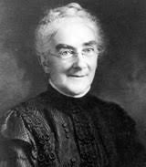

Biography
Ellen Henrietta Swallow Richards was an American environmental and industrial chemist in the 1800s. She was born in Dunstable, Massachusetts on December 3, 1842. Ellen specialized in home economics, chemistry and sanitary engineering.
Ellen Swallow Richards studied at Vassar College where she later earned a degree in 1870. She then went on to become one of the first women ever to be admitted to the Massachusetts Institute of Technology, or MIT. She graduated in 1873 with a bachelors degree in science. She attempted to receive a doctorate, but the head of school rejected her attempts because of her gender.
Richards then went on to establish a female laboratory at MIT in Cambridge, Massachusetts. She began teaching there and became MIT's first female professor. She was actually unpaid for this job and kept it for four years. After that, Ellen became an instructor at the Lawrence Experiment Station's sanitary chemistry laboratory for 27 years.
Ellen Swallow Richards died on March 30, 1911. Her legacy will live on through the Ellen Swallow Richards House in Jamaica Plain, Massachusetts. The house has been a National Historic Landmark since 1992. Ellen was and forever will be an important part of the history of American women in science.